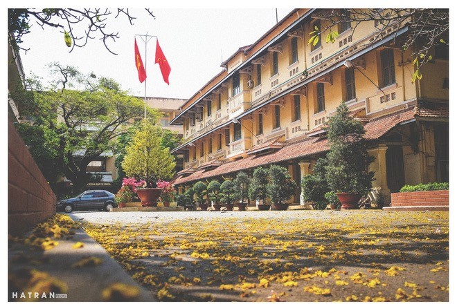
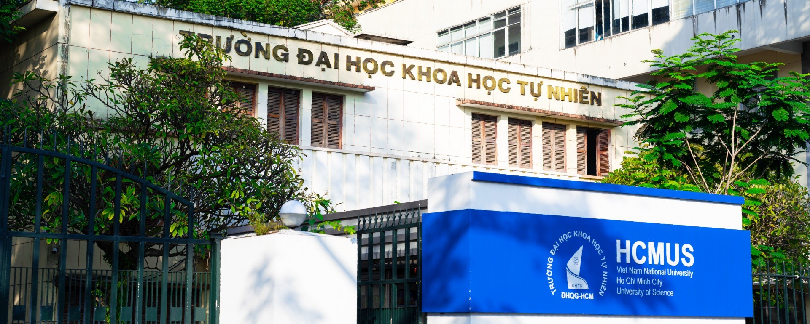
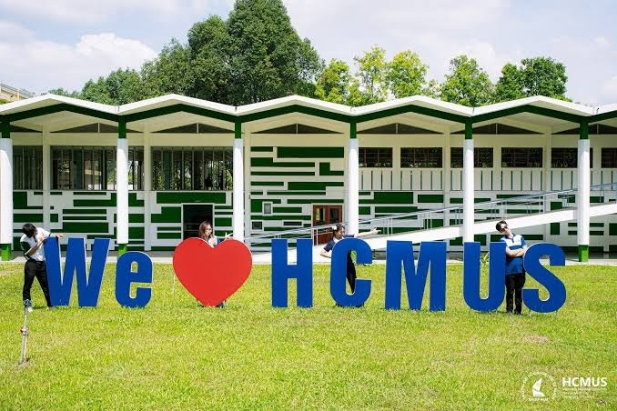

Tuyển sinh HCMUS
Tra cứu phương thức tuyển sinh, ngành học và tổ hợp xét tuyển theo năm, dựa trên dữ liệu có nguồn.
KHỞI ĐẦU BẰNG SỰ TÒ MÒ
Từ câu hỏi đầu tiên về tuyển sinh đến một ngành học phù hợp — khám phá HCMUS theo cách rõ ràng và đầy cảm hứng.
DỰ ÁN SINH VIÊN CSC10014 · KHÔNG PHẢI WEBSITE CHÍNH THỨC CỦA HCMUS · THÔNG TIN TUYỂN SINH CẦN ĐƯỢC KIỂM CHỨNG
01 / THE VISION
Chọn ngành không chỉ là tìm một cái tên. Chúng mình mong muốn kết nối những thắc mắc của học sinh với nguồn thông tin có thể kiểm tra lại, để mỗi bạn tự tin hơn khi khám phá tương lai.
KHÁM PHÁ CÁC TÍNH NĂNGBắt đầu từ câu hỏi bằng ngôn ngữ tự nhiên.
Hướng tới thông tin tra cứu được theo nguồn và năm.
Gợi ý để khám phá, không quyết định thay bạn.
02 / CAMPUS MOMENTS
Một vài lát cắt của HCMUS — mái trường, khoảng sân, những góc quen thuộc. Hành trình tìm hiểu trường nên bắt đầu bằng cả hình ảnh và thông tin.


Curiosity
opens doors.

Hình ảnh do người dùng cung cấp; không sử dụng ảnh từ Pizza 4P’s hoặc nhận là website chính thức của HCMUS.
03 / THE POSSIBILITIES
Ba lối vào đơn giản để khám phá thông tin và định hướng học tập. Mọi câu hỏi đều dẫn đến một hành trình riêng.
Tra cứu phương thức tuyển sinh, ngành học và tổ hợp xét tuyển theo năm, dựa trên dữ liệu có nguồn.
Tìm hiểu các ngành, đặt câu hỏi theo sở thích và tiếp cận mô tả ngành từ tài liệu trường công bố.
Nhận gợi ý về thói quen tự học, kiến thức nền tảng và cách chuẩn bị cho môi trường đại học.
* Phạm vi MVP phụ thuộc dữ liệu chính thức đã được nhóm kiểm chứng. Những nội dung chưa được xác minh sẽ không được trình bày như sự thật.
04 / THE APPROACH
HCMUS Guide được thiết kế theo một quy trình có thể kiểm tra: hiểu câu hỏi, tìm bằng chứng và phản hồi có trách nhiệm.
Nhập điều bạn đang thắc mắc bằng tiếng Việt.
Backend dự kiến tra cứu nguồn HCMUS và áp dụng quy tắc lọc.
Nhận lời giải thích; với thông tin tuyển sinh, hãy kiểm tra dẫn nguồn.
05 / AN OPEN CONVERSATION
Không gian trò chuyện được thiết kế toàn màn hình, để bạn có thể tập trung tìm hiểu và theo dõi những câu trả lời dài cùng nguồn tham khảo.
BẢN DEMO GIAO DIỆN06 / TRUST THE SOURCE
Câu trả lời liên quan đến tuyển sinh cần được đối chiếu với thông báo chính thức và đúng năm áp dụng. Đây là các cổng thông tin để bạn tự kiểm chứng.